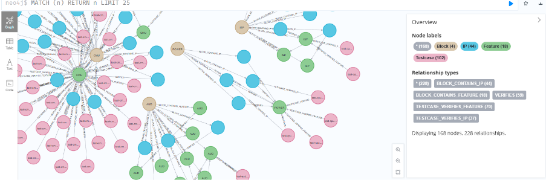
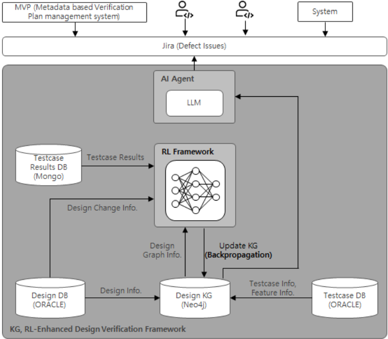

迈向自适应 SoC 设计验证：KG 增强的生成式 AI、RL 与反向传播调试
该论文针对 SoC 验证中设计变更影响难以预测、回归冗余高的问题，将 block/IP 的设计变更建模为知识图谱（KG）三元组，用 PPO 强化学习智能体学习 LEARNED_CORRELATION 边权重，实现验证任务优先级排序与影响聚焦验证。框架基于 Neo4j 属性图，配合评分制奖励函数、ETL pipeline/agent 动态更新 Graph DB，以及沿 clock/reset、数据通路依赖边做梯度式敏感度回溯的 backpropagation debugging 双向流程。在 12-37 个 IP 规模的多个 block 上，相比仅用设计与 test plan 连通性的静态 KG，KG+RL 将 Targeting Accuracy 从 36.1% 提升至 67%，Coverage Recovery 提升至 11.6-19.2%，冗余测试比例最高下降 9.2 个百分点，且 PPO 泛化优于 DQN。论文强调该框架不能取代 full regression，仅作为提升验证效率的补充智能层。其变更影响驱动的回归优先级排序与 KG/RL 自动化思路，对团队多版本 IP 的回归管理与验证计划自动化有直接借鉴价值。
现代 SoC 集成数百个功能 block 与 IP，验证复杂度随规模指数增长；仅基于设计与 test plan 层级连通性构建的静态 KG 无法准确预测设计变更对验证结果的影响——测试结果变化经常出现在未直接修改的 IP 上，且变化比例甚至高于实际修改的 IP，导致 targeting accuracy 低、冗余测试膨胀、验证周期低效；传统调试依赖人工 trace 分析，耗时且易出错。
将 block/IP/module 的设计变更建模为 KG 中的 triple，在 Neo4j 属性图中定义 Block/IP/Feature/Testcase/Class/DE 六类实体与 CONTAINS、IMPLEMENTED_BY、VERIFIED_BY、USES_DE 及 RL 学习得到的 LEARNED_CORRELATION 关系；按 IP 与所属 block 的内外部关系强弱分为 IP_Type1/Type2 做针对性分析；以不可篡改的设计版本-验证结果历史为训练基础，用 PPO 智能体学习 KG 边权重（KG(GNN) 与 PPO agent 联合优化），评分制奖励函数将奖励集中于历史问题区域；提出 forward verification 与 backward propagation 双向流程：用 KG embedding 将失败锚定到具体 IP/block，沿 clock/reset、数据通路等依赖边做 gradient-like sensitivity analysis 回溯，并结合 KG 连通权重与历史 debug 统计排序 root cause；通过 ETL pipeline 或 autonomous agent 更新 Graph DB 边以反映设计变更。
Targeting Accuracy 从 36.1% 提升至 67%（论文表述为 31% 的改进）
Coverage Recovery（CR）从 KG Only 的 6.3-15.4% 提升至 KG+RL 的 11.6-19.2%；其中 Block C（IP_Type2）从 9.2% 近乎翻倍至 18.3%
Redundant Test Ratio（RTR）在所有 block 下降 2.3-9.2%；Block C 从 90.8% 降至 81.7%
PPO 在 risk-based prioritization 场景下泛化性能优于 DQN（论文为定性比较结论）
改进模式在 12-37 个 IP 规模的不同 block（A/C/I/P Block）上保持一致，显示可扩展性
论文指出已有工作中 KG 在 EDA 主要用于设计文档、RL 受稀疏奖励限制、backpropagation debugging 此前仅用于软件调试而在硬件验证语境下是新概念；本文的区别在于将三者闭环结合：用 RL 学习的 LEARNED_CORRELATION 边捕获静态结构连通性之外的执行级动态影响关系，用评分制奖励函数缓解稀疏奖励，并将 backpropagation debugging 引入硬件验证做依赖回溯；同时以 IP_Type1/Type2 分类刻画 IP 内外部耦合差异，并以 PPO 对比 DQN 验证 policy gradient 方法在 risk-based prioritization 上的优势。
相关度级别：high
命中能力域：2.4 设计验证方法学 | 2.7 EDA/验证自动化与 AI 辅助 | 2.6 仿真性能与加速器
理由：论文直接命中 2.4（验证计划、回归优先级排序、变更影响分析、冗余测试削减）与 2.7（KG+RL+agent 的验证自动化与 AI 辅助方法学），并通过大规模回归中的 ML 辅助验证空间缩减（RTR 下降 2.3-9.2 个百分点）与 2.6 中'大规模回归、ML 辅助验证空间缩减'相关（注意：与仿真加速器/Emulation 本身无关）。团队交付 LPDDR/HBM4/UCIe 等多版本快速演进的 IP，回归规模大、spec 变更频繁，变更影响驱动的 test 优先级排序可直接提升回归效率与交付节奏；该工作也是团队'沉淀可复用方法学与自动化能力'方向的典型参考。需注意论文场景为 SoC 级 block/IP 粒度，落地需适配到 IP 级实体与奖励设计。
建议动作：深入精读并做内部分享
Insu Jang 1
Seonghee Yim 2
Hanna Jang 3
Youngsik Kim 4
1 三星电子，韩国华城。1 is1226.jang; 2 sh.yim; 3 hn01.jang; 4 ys31.kim@samsung.com
摘要 - 本文提出一种以最大化验证效率为目标的方案，在规划与前端设计阶段利用基于知识图谱（KG）的强化学习来应对片上系统（SoC）的关键硅缺陷。块（block）、IP 或模块（module）的设计变更被建模为 KG 中的三元组，强化学习智能体通过利用 KG 中捕获的功能关系，学习对验证任务进行优先级排序。与仅依赖层次化设计实例关系的传统验证方法相比，基于 KG 的方法展现出更优的性能。
现代片上系统（SoC）设计集成了数百个功能块（BLK）和知识产权（IP）核，带来了随复杂度呈指数级扩展的验证挑战。尽管基于仿真的验证仍然必不可少，但在调试跨越寄存器传输级（RTL）、门级和系统级抽象的复杂多层故障时，其有效性会随之下降。传统方法通常依赖人工轨迹分析——这一过程既耗时又容易出现人为失误——尤其是在诊断电源管理、时钟域交叉或协议一致性方面的问题时。
为了克服这些局限，我们提出了一种集成式调试框架，该框架结合了基于知识图谱（KG）的推理和基于反向传播的故障分析，并提供了来自SoC实际开发流程的示例。我们将尝试详细证明这些结果。为此所使用的任务信息可以是一般性案例，也可以是特定条件下的案例，但其均由实际开发中可能出现的案例构成。
我们的方法独特地衔接了以下方面：
现有的验证方法严重依赖于约束随机测试和覆盖率驱动的方法。机器学习技术——特别是强化学习（RL）——已展现出潜力，但其受制于稀疏的奖励信号。知识图谱（KG）已被用于电子设计自动化（EDA）中的设计文档管理，但尚未在验证领域得到广泛应用。反向传播调试已被应用于软件调试，但在硬件验证场景中仍是一个新颖的概念。本文针对三个关键应用领域给出了具体数据和系统配置，如下所示。
提取跨设计阶段发生变化的模块的版本信息。版本数据与先前定义的实体相关联，以支持发布级别的跟踪。
。在扩展到完整 SoC 之前，验证首先从一个聚焦的 IP 模块开始。IP 被划分为两种类型，以便进行有针对性的分析。
IP_Type1：与其所属模块内部关系紧密，与外部模块关系较弱（例如，音频模块/abox IP）
IP_Type2：属于某个特定模块，但同时兼具内部和外部关系（例如，USB 模块/总线 IP）
。除了抽取-转换-加载（ETL）流水线之外，还将构建一个用于更新图数据库（Graph DB）及其边的工作流——既可以作为系统化流水线，也可以作为自主智能体——以反映设计变更数据。
。为了有效地实现增量验证以支持重复性改进，创建了一种反向传播调试流程，用于追踪测试结果之间的依赖关系。该流程通过强化学习（RL）进行学习，使系统能够动态更新关系信息。
。提出了一种具体的基于评分的奖励函数，将 RL 奖励集中于历史上问题多发的区域。
所提出的框架集成了用于测试用例合成的生成式人工智能（Generative AI）、用于语义验证的知识图谱（KG），以及用于基于梯度的错误追踪的反向传播调试。该闭环系统通过由 KG 推理和调试信号共同引导的 RL 策略，使验证策略适应设计变更。
为了捕捉真实项目中修改信息的节点及其关系的图结构，我们基于与每个模块相关联的 IP 的逐版本变化幅度来定义 IP 类型。对于每种 IP 类型，我们跟踪与已变更 IP 信息相关的功能的测试结果的可变性。所得到的影响数据用于在功能验证期间更新模块之间的依赖信息。这些更新后的关系数据随后作为验证基础 KG 图进行反馈。我们引入了一种双向分析流程：
执行传统测试平台以检测失效，或应用当前所应用边的基于属性的信息的图数据库（Graph DB）关系。
步骤 1：利用知识图谱（KG）嵌入将失效锚定到特定的 IP/模块（例如，OIS_MCU_TOP 在睡眠状态期间发生的 JTAG 访问违规）。
步骤 2：利用类梯度敏感性分析，沿依赖边（例如时钟/复位网络、数据通路）反向传播错误。
步骤 3：结合 KG 连接权重与历史调试统计信息，对根本原因进行排序。
奖励（reward）可以利用全部测试用例的结果，根据通过强化学习（RL）和知识图谱（KG）提取的测试用例的测试结果计算得到。以下是基于测试用例类型的奖励示例以及奖励计算示例。"Testcase type"（测试用例类型）列中的 "Predicted"（已预测）表示我们结合 KG 的 RL 网络预测这些测试用例应优先进行测试。"Not Predicted"（未预测）表示这些测试用例未被我们的 RL 网络预测到。"The result is changed"（结果发生变化）列中的 "Yes" 表示这些测试用例的结果发生了变化。"No" 表示结果未发生变化。
| Testcase type | The Result is changed | Reward for each testcase |
|---|---|---|
| Predicted | Yes | +10 |
| No | -10 | |
| Not Predicted | Yes | -5 |
| Testcase type | The Result is changed | Reward for each testcase |
| Test Result | Reward |
|---|---|
| The results of 15 testcases are changed from total 100 testcases. The model predicted 20 testcases and the results are changed in 12 of the predicted testcases. 3 testcases with changed results failed to predict. | 12*10 + 8*(-10) + 3*(-5) = 25 |
| The results of 16 testcases are changed from total 100 testcases. The model predicted 15 testcases and the results are changed in 13 of the predicted testcases. 3 testcases with changed results failed to predict. | 13*10 + 2*(-10) + 3*(-5) = 95 |
| Test Result | Reward |
知识图谱（KG）模式充当所提出验证框架的语义主干，对设计意图与失效动态均进行编码。
知识图谱（KG）同时表征了片上系统（SoC）的静态设计结构与动态验证语义。KG 中的每个节点和关系都对应于从设计规范、仿真数据和调试日志中提取的可验证实体或交互。
KG 模式采用一种混合本体（hybrid ontology），用于刻画层次、时序与行为依赖关系。KG 由以下实体类型构成：
Block（模块）：SoC 架构中的高层功能或通用子系统。对多个 IP 进行分组，并作为设计划分的主要结构单元。
IP（Intellectual Property，知识产权核）：Block 内的设计模块。是设计变更、集成与验证影响分析的基本单元。
Feature（特性）：由一个或多个 IP 实现的功能能力或设计意图。是连接底层设计组件与高层验证目标的语义抽象层。
Testcase（测试用例）：为验证特定特性、IP 行为或系统场景而设计的可执行验证产物。
Class（类）：基于功能、场景类型或验证策略对测试用例进行的逻辑分组。支持层次化组织与可扩展的测试管理。
DE（Design Element，设计元素）：细粒度的设计构造，例如寄存器、接口、配置参数或协议元素。支持在高层设计变更与底层验证效果之间建立可追溯性。关系类型
以下关系信息可反映在 Graph DB（图数据库）中，实体之间的关系定义如下：
CONTAINS：连接层次结构，例如一个 Block 包含多个 IP，或一个 Class 包含多个 Testcase。
IMPLEMENTED_BY：将 Feature 与负责实现该 Feature 的 IP 相关联，从而支持以特性为中心的影响分析。
LEARNED_CORRELATION：表示通过强化学习推导得到的实体间动态学习关系。这些边编码了执行层面的影响以及设计或测试计划中未明确定义的间接行为依赖。
VERIFIED_BY：将 Feature 或 IP 与验证其行为的 Testcase 相连接，提供设计意图与验证产物之间的直接映射。
USES_DE：将 IP 或 Testcase 与其访问或依赖的 Design Element 相关联，从而支持对配置及接口级交互的细粒度追踪。
关系的示例如下表所示。
| Relationship | Example |
|---|---|
| CONTAINS | POWER CONTAINS DPU_VX.XX |
| IMPLEMENTED_BY | test-cpustub-pmu_lpg_test_c-BLOCK=AUD- LOCAL_PMU_MASK-PMU_SVA-COUNT=0- AUTOCLKGATE_DISABLE IMPLEMENTED_BY pmu_lpg_test_c |
| LEARNED_CORRELATION | ICPU LEARNED_CORRELATION test-cpustub-pmu_lpg_test_c- BLOCK=ICPU-PMU_SVA-COUNT=0 POWER LEARNED_CORRELATION RGBP CSTAT LEARNED_CORRELATION ICPU |
| VERIFIED_BY | DPU VERIFIED_BY test-cpustub-pmu_lpg_test_c-BLOCK=DPU- PMU_SVA-COUNT=0 |
| USES_DE | test-cpustub-pmu_lpg_test_c-BLOCK=ICPU-PMU_SVA- COUNT=0 USES_DE cpustub |
| Relationship | Example |
所提出的知识图谱（KG）使用 Neo4j 实现为属性图，以便对设计-验证关系进行实际的检查、查询和可视化：
neo4j$ MATCH (n)

该图展示了层次化的设计结构与验证映射，以及经近端策略优化（PPO）强化的 LEARNED_CORRELATION 边。静态关系反映设计与测试计划信息，而学习得到的边则捕捉动态的行为依赖。这些权重表示从测试结果变化中推断出的执行级影响强度，使图能够超越静态连接性而不断演化。
步骤 1：初始化
关键点：从设计版本不可变的历史演进过程及其对应的验证结果中学习，同时进行 KG(GNN) ← KG Edge Weights → PPO Agent 网络优化。

为了定量评估所提出的强化学习（RL）增强知识图谱的有效性，我们定义了以下指标。
| Metric | Definition |
|---|---|
| Targeting Accuracy (TA) | Ratio of correctly identified design-changed IPs among all IPs predicted to be affected by test result changes |
| Coverage Recovery (CR) | Ratio of test coverage correctly attributed back to the actual changed IPs |
| Redundant Test Ratio (RTR) | Percentage of executed tests whose result changes are unrelated to actual design changes |
| Metric | Definition |
将仅由设计和测试计划连接关系构建的静态知识图谱（KG）的性能，与通过 RL（PPO）加权的 KG 进行比较。
| Metric | KG Only | Trace Accuracy | Improvement |
|---|---|---|---|
| Targeting Accuracy (TA) | 35/97 = 36.1% | 65/97 = 67% | ↑ ~31% |
| Coverage Recovery (CR) | 7/112=6.3% (A) | 13/112=11.6% (A) | ↑ 2.2~9.1% |
| Coverage Recovery (CR) | 61/666=9.2% (C) | 122/666=18.3% (C) | ↑ 2.2~9.1% |
| Coverage Recovery (CR) | 11/877=1.3% (I) | 31/877=3.5% (I) | ↑ 2.2~9.1% |
| Coverage Recovery (CR) | 4/26=15.4% (P) | 5/26=19.2% (P) | ↑ 2.2~9.1% |
| Redundant Test Ratio (RTR) | 93.8% | 88.4% | ↑ 2.3~9.2% |
| Redundant Test Ratio (RTR) | 90.8% | 81.7% | ↑ 2.3~9.2% |
| Redundant Test Ratio (RTR) | 98.7% | 96.5% | ↑ 2.3~9.2% |
| Redundant Test Ratio (RTR) | 84.6% | 80.8% | ↑ 2.3~9.2% |
| Metric | KG Only | Trace Accuracy | Improvement |
Based on the quantitative evaluation results, the following key observations can be drawn:
与静态KG方法相比，强化学习（RL）增强的知识图谱（KG）在所有评估指标上均表现出一致的改进。在不同模块上，这些改进的幅度从目标准确率的31%到覆盖率恢复的2.2-9.2%不等。
覆盖率恢复（CR）显示出显著改进，从6.3-15.4%（仅KG）提升至11.6-19.2%（KG+RL）。最显著的改进出现在模块C（IP_Type2）中，其中CR从9.2%几乎翻倍至18.3%，这表明RL框架能够更好地将测试变更归因于其根本原因。
冗余测试比率（RTR）在所有模块中均大幅下降，改进幅度为2.3-9.2%。模块C（IP_Type2）的降幅最为显著，从90.8%降至81.7%，这表明RL学习能够有效识别并消除无关的测试关系。
该框架根据IP特性呈现出不同的性能模式：
尽管目标定位准确率（Targeting Accuracy）显著提升（36.1% → 67%），该框架采用了精确率-召回率优化策略。对受影响 IP（包括未发生直接设计变更的 IP）检测数量的增加
以牺牲部分精确率为代价提供了全面的验证覆盖，这与规避风险的验证实践相一致。
在不同模块类型（规模从 12 到 37 个 IP 不等）上呈现的一致改进模式，证明了该框架在不同 SoC 组件和验证场景中的可扩展性与可靠性。
在本研究中，我们采用近端策略优化（PPO）作为主要的强化学习（RL）算法，并使用深度Q网络（DQN）开展对比实验，以评估二者在硬件验证场景中的性能差异。对于需要“基于风险的优先级排序”的 SoC 验证环境，策略梯度方法（PPO）相比基于价值的方法（DQN）展现出更优的泛化性能。PPO 的概率化动作选择机制，与那些需要在保持对高风险区域关注的同时、对不确定设计空间进行均衡探索的验证任务更为契合。
本文证明了仅由 SoC 设计信息和测试计划连接关系构建的静态知识图谱（KG）不足以准确预测设计变更对验证结果的影响。实验分析表明，测试结果变化频繁出现在未发生直接设计修改的 IP 中，且其测试变化率往往高于实际发生变更的 IP。这种行为导致目标定位准确率低、冗余膨胀以及验证周期效率低下。为解决这一局限，我们提出了一种基于强化学习的知识图谱权重学习方法，采用近端策略优化（Proximal Policy Optimization, PPO）。通过将测试结果变化作为奖励信号纳入，并对其根源进行反向追溯，学习得到的 KG 所捕获的是动态的执行层面影响关系，而非简单的结构连接关系。因此，所提出的方法显著减少了冗余测试，加快了覆盖率恢复速度，并提高了识别与设计相关的 IP 和测试的准确性。
值得注意的是，尽管所提出的方法能够实现高效的优先级排序和聚焦影响的验证，但它并未消除完整回归测试的必要性。为实现验证的完备性，在后台执行完整回归测试仍然至关重要，以便检测那些可能无法通过针对性测试立即暴露的隐藏错误或低概率错误。因此，所提出的框架应被视为一个补充性的智能层，用于提升验证效率和响应能力，同时保留完整回归测试作为全面验证的安全网。
总体而言，本研究表明，将强化学习与 KG 相结合，为实现更智能、更自适应且更高效的 SoC 验证提供了一条切实可行且可扩展的路径，同时不会削弱发现隐藏设计缺陷所需的严谨性。
为增强所提出的框架，仍有若干研究方向有待探索：
这些方向旨在将该方案转变为面向下一代设计验证自动化的、实用且可扩展的智能层。